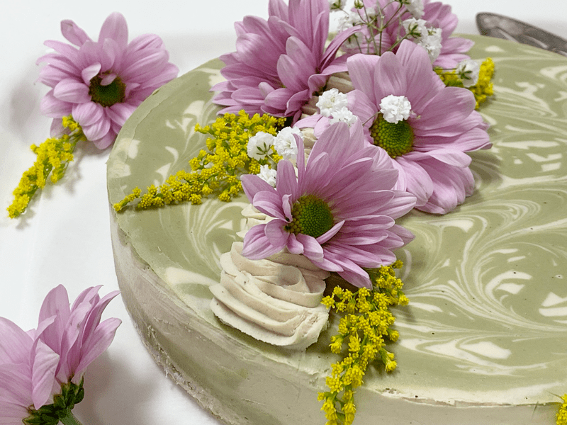
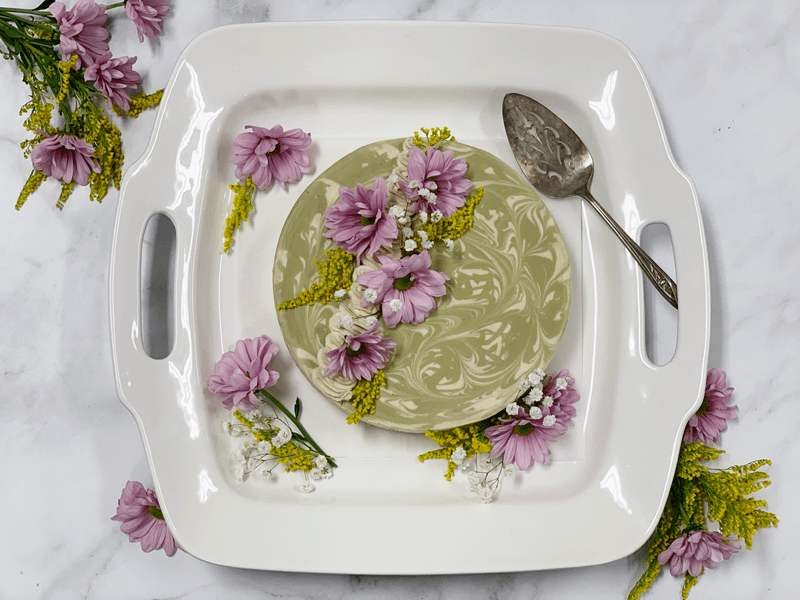

This cheesecake is my farewell gift for the Summer of 2019. Although I am dumb-smacked about how quickly time passes these days, I am looking forward to the Fall and Winter months. I love the slower pace feeling that gently moves through the air, I love the chilly weather, and I even look forward to a few snowed-in days.

That’s not to say that I didn’t enjoy our summer. We made significant headway on the new Studio (kitchen and creative play space), which you can read about (here). We still have one wall left to do, but we are patiently waiting to move the last of our manufacturing equipment to its new location to free up that wall. Even though I was tapping-my-toe-hungry to complete the studio, it allowed us some time to deal with other business and orchard work.

I also spent the summer months purging the house! Bob did too, but I was the driving force (hurricane) through it all. We were on a mission to either give, donate, or sell items that made themselves at home in dark closets, storage spaces, basements, etc. We even parted with many antiques that we have collected throughout the years. We loved these things, but they no longer held meaning. One item was a pinball machine from 1932. It was a gorgeous piece of furniture that Bob fixed, getting it into working condition, but we felt that it would have a better home in our local WAAAM Museum. That way, rather than it being tucked in our living room corner, it could now be enjoyed by the public.
A few months ago, I mentioned to our Facebook family (a private Facebook group for paid members) that I felt that I was going through a transformation… I didn’t know exactly where it was guiding me. I have and continue to remain open to what is yet ahead.
 The main changes that I can put my finger on have been; purging possessions, a true cleansing of the house (not cleaning, it’s much deeper than that). My passion for creativity has shifted in a more meaningful way. I am no longer making things, just to make them; instead, everything I do and create is almost symbolic of this change taking place within me.
The main changes that I can put my finger on have been; purging possessions, a true cleansing of the house (not cleaning, it’s much deeper than that). My passion for creativity has shifted in a more meaningful way. I am no longer making things, just to make them; instead, everything I do and create is almost symbolic of this change taking place within me.
I have grown a GREEN thumb! I will share more about this in upcoming posts, but this also represents a massive shift that is wiggling itself out from my very core. Throughout all this, I have also been spending less time on the Internet, and being more present with those around me.
Naturally, I am about 70% introvert and 30% extrovert. I tend to be quiet (appearing shy to many), but I have no issues being around people… I love people, I love being around others, I enjoy bonding and creating friendships, I love hosting parties, etc… yet at the end of the day, I enjoy my alone family time with Bob and Milo.
I shared that because I have an online business, so it is VERY easy for me to get sucked into the Internet web. So, learning to step away and connecting with nature and people has been a little like what fuel is to fire for this transformation in me.
There is actually a lot to share, but if I am not careful, this post will get so long that you start drooling on your computer keyboard, and it won’t be due to your over-activated tastebuds, it will be due to sleep. Haha So, let’s chat up this cheesecake! It’s creamy delicious, stays firm at room temp (70 degrees F or below),
Ingredients:
9″ Springform pan
Crust:
- 1 cups rolled gluten-free oats, soaked & dehydrated
- 2 1/4 cup shredded coconut
- 1/4 tsp Himalayan pink salt
- 1/2 tsp liquid stevia
- 1/4 cup coconut butter, softened or 2 Tbsp melted coconut oil
- 1/2 cup water
- 2 Tbsp maple syrup